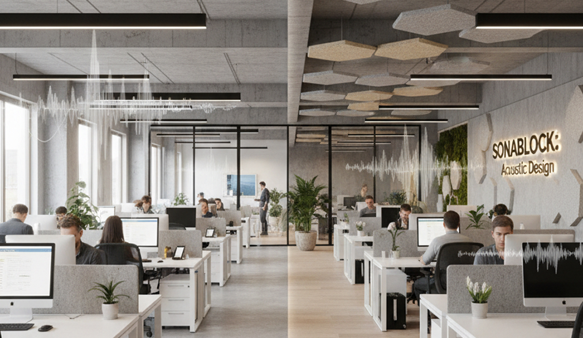
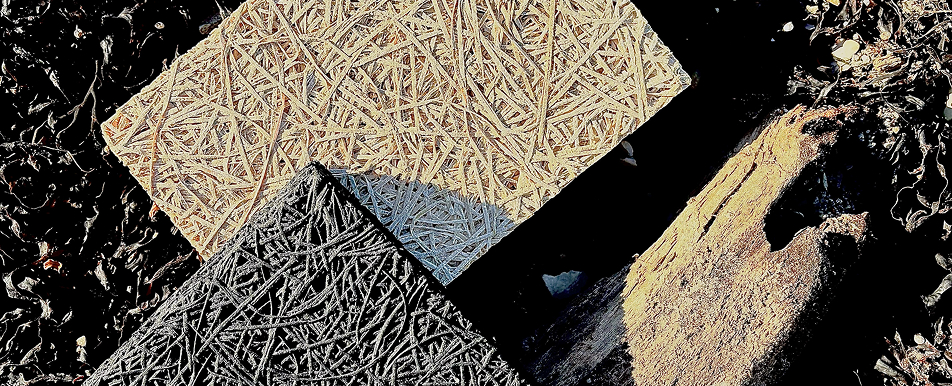

How Sonablock Transformed the Acoustics of a Swedish Office Space
Evidence-based strategies for implementing acoustic solutions that enhance productivity, reduce noise pollution, and create comfortable work environments in modern commercial spaces.

Evidence-based strategies for implementing acoustic solutions that enhance productivity, reduce noise pollution, and create comfortable work environments in modern commercial spaces.
Recent studies from the International Journal of Environmental Research demonstrate that workplace noise can reduce productivity by up to 38% in knowledge work environments. This article explores evidence-based strategies for implementing acoustic solutions in commercial office spaces.
Key Insight
Strategic acoustic panel placement can reduce ambient noise levels by 15–25 dB, creating measurable improvements in speech intelligibility and concentration capacity.
Understanding acoustic principles
Effective acoustic treatment requires understanding three fundamental concepts:
- Sound Absorption: The process by which acoustic energy is converted to heat within porous materials.
- Sound Diffusion: The scattering of sound waves to eliminate echo and standing waves.
- Sound Isolation: Preventing sound transmission between adjacent spaces.

Figure 1: Strategic wall-mounted acoustic panel installation in a Stockholm technology officeMaterial science & innovation
Sonablock panels leverage advanced material engineering to achieve superior acoustic performance:
Core technologies
- Multi-Density Substrate Engineered wood fiber layers with varying densities to absorb different frequency ranges
- Micro-Perforation Pattern Engineered wood fiber layers with varying densities to absorb different frequency ranges
- Natural Wood Veneer Finish Sustainably sourced oak, walnut, and ash veneers that maintain acoustic transparency
"The integration of natural materials with advanced acoustic engineering creates spaces that are both sonically comfortable and visually inspiring."
— Dr. Henrik Larsson, Acoustical Society of Sweden
{kind=link}
{kind=link}
Installation best practices
Pre-installation checklist
- Conduct acoustic assessment to identify primary noise sources
- Calculate required panel coverage (typically 25–48% of wall surface)
- Verify wall substrate can support panel weight (8–12 kg/m²)
- Prepare mounting hardware and tools per specification sheet
Performance metrics
| Frequency Range | Absorption Coefficient | Application | Recommended Panel |
|---|---|---|---|
| 125 Hz | 0.35 | Low-frequency rumble | Sonablock Deep |
| 500 Hz | 0.88 | Speech frequencies | Sonablock Standard |
| 2000 Hz | 0.95 | High-frequency clarity | Sonablock Micro |
| 4000 Hz | 0.92 | Sibilance control | Sonablock Micro |
Conclusion
Strategic acoustic treatment transforms open-plan offices from challenging noise environments into productive, comfortable workspaces. By combining evidence-based panel placement with high-performance materials, organizations can achieve measurable improvements in employee satisfaction and performance.
For project-specific consultation and acoustic assessment services, contact our technical team at acoustics@sonablock.com.